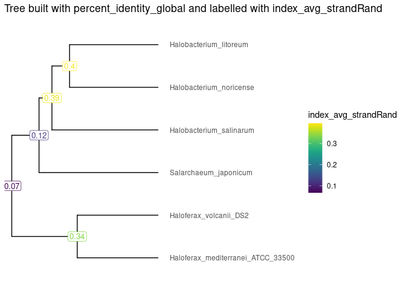

The goal of ScrambledTreeBuilder is to allow users to conveniently produce phylogenetic trees between species with the purpose of studying genome scrambling.
Installation
You can install the development version of ScrambledTreeBuilder from GitHub with:
# install.packages("devtools")
devtools::install_github("brennern/ScrambledTreeBuilder")Usage
After performing an All Vs. All genome comparison between dozens of species, you may have .yaml files as the output. In order to convert these files into a dataframe in R, you may use the formatStats() function. Extract your .yaml files from their respective directory and store the information under the variable yamlFiles.
library(ScrambledTreeBuilder)
resultsDir <- system.file("extdata/PairwiseComparisons", package = "ScrambledTreeBuilder")
yamlFileData <- list.files(resultsDir, pattern = "*.yaml.bz2", full.names = TRUE)
names(yamlFileData) <- yamlFileData |> basename() |> sub(pat = ".yaml.bz2", rep="")
exDataFrame <- formatStats(yamlFileData)To build the phylogenetic trees, your data frame will need to be tranformed into a matrix. The function makeMatrix() will accomplish this.
valuesToBuildTheTree <- "percent_identity_global"
treeMatrix <- makeMatrix(exDataFrame, valuesToBuildTheTree, 100, 50)
valuesToPlaceOnLabels <- "index_avg_strandRand"
valueMatrix <- makeMatrix(exDataFrame, valuesToPlaceOnLabels, 1, 0.5)Then, in order to plot the percent identity and strand randomisation index scores on the tree, you will need to extract the tree data in a tibble and utilize the functions makeValueTibble().
HClust <- hclust(dist(treeMatrix), method = "complete")
Tibble <- tidytree::as_tibble(tidytree::as.phylo(HClust))
tibbleWithValue <- makeValueTibble(Tibble, valueMatrix)Finally, to visualize your phylogenetic tree, you can utilize the visualizeTree() function by inputting your tibble data containing your desired variable.
Tree <- visualizeTree(tibbleWithValue, tibbleWithValue$value)
#> Registered S3 methods overwritten by 'treeio':
#> method from
#> MRCA.phylo tidytree
#> MRCA.treedata tidytree
#> Nnode.treedata tidytree
#> Ntip.treedata tidytree
#> ancestor.phylo tidytree
#> ancestor.treedata tidytree
#> child.phylo tidytree
#> child.treedata tidytree
#> full_join.phylo tidytree
#> full_join.treedata tidytree
#> groupClade.phylo tidytree
#> groupClade.treedata tidytree
#> groupOTU.phylo tidytree
#> groupOTU.treedata tidytree
#> inner_join.phylo tidytree
#> inner_join.treedata tidytree
#> is.rooted.treedata tidytree
#> nodeid.phylo tidytree
#> nodeid.treedata tidytree
#> nodelab.phylo tidytree
#> nodelab.treedata tidytree
#> offspring.phylo tidytree
#> offspring.treedata tidytree
#> parent.phylo tidytree
#> parent.treedata tidytree
#> root.treedata tidytree
#> rootnode.phylo tidytree
#> sibling.phylo tidytree
#> Scale for y is already present.
#> Adding another scale for y, which will replace the existing scale.
Tree +
ggplot2::ggtitle(paste("Tree built with", valuesToBuildTheTree, "and labelled with", valuesToPlaceOnLabels)) +
viridis::scale_color_viridis(name = valuesToPlaceOnLabels)